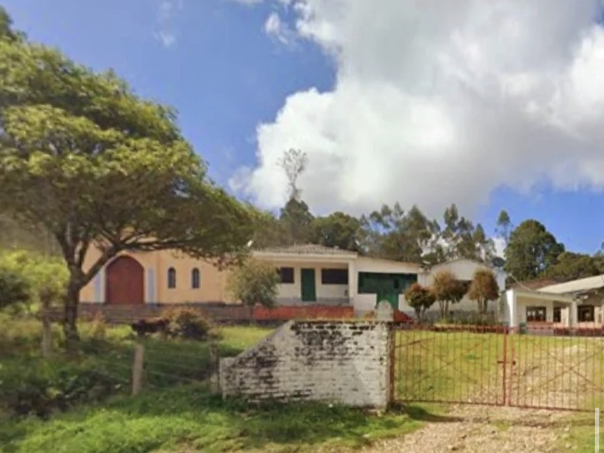

Territorio Creador
Usa flechas izquierda y derecha para mover entre diapositivas.
Territorio Creador
Propuesta pedagógica y cultural para activar capacidades creativas en contexto rural, con enfoque de derecho, identidad y producción simbólica local.
Vereda El Carmen · Duitama · I.E.A. Francisco Medrano

Diagnóstico
La activación cultural suele medirse con lógicas metropolitanas que no dialogan con los tiempos, oficios y formas de encuentro rural.
Resultado: exclusión estructural de prácticas culturales rurales.
Contexto local
La escuela forma para la productividad agrícola, pero la creación artística queda reducida a eventos puntuales. El reto es volverla práctica cotidiana.
La cultura debe pasar de evento esporádico a hábito de creación comunitaria.
Propuesta
Laboratorio de producción cultural rural que integra artes interdisciplinarias, diseño y memoria territorial para convertir a niñas, niños y jóvenes en autores de su propio relato.
De consumidores culturales a sujetos creadores.
Cambio de enfoque
La producción agrícola sigue siendo base económica, pero se expande con producción simbólica, memoria y sentido colectivo.
Democratizar la creación, no solo el acceso a oferta cultural.
Metodología
Adaptación del Design Thinking al entorno rural: ciclos cortos, participación comunitaria, validación pedagógica y producción visible.
Iterar con la comunidad, no solo para la comunidad.
Arquitectura del laboratorio
Cuatro lenguajes para traducir territorio en obra: visual, literario, escénico y audiovisual, con integración curricular y producto final comunitario.
Interdisciplinariedad para sostener procesos, no solo productos.
Valor diferencial
El proyecto propone una lógica de base: primero desarrollar sujetos creadores; después escalar hacia dinámicas económicas o de clúster.
Antes de crear un distrito creativo, hay que crear sujetos creadores.
Implementación
Ruta operativa para pasar de propuesta a programa institucional escalable, medible y sostenible en el territorio.
Inicio sugerido: piloto semestral con evaluación de continuidad.